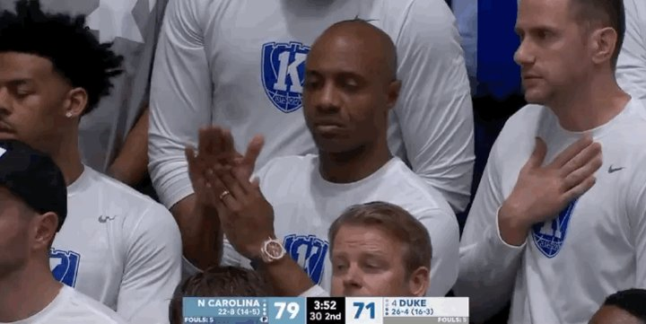
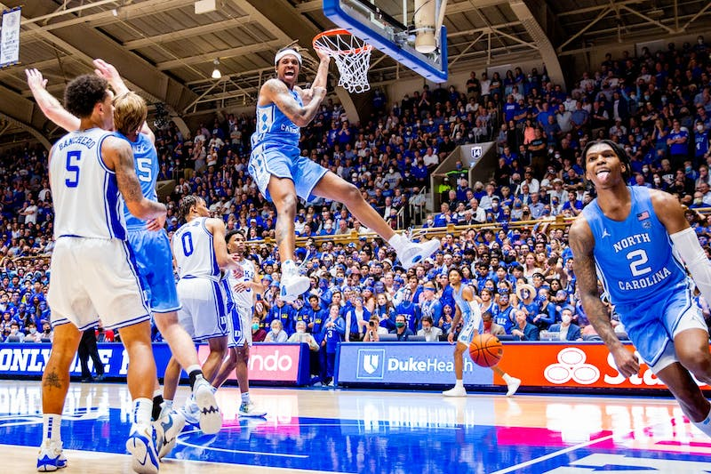

The Tar Heels came into the second half with momentum on their side. Armando Bacot spins through 2 defenders and makes tough layup to tie the game, 41-41. Duke got some stops and grew their lead back to 7 with 12:49 left in the game. Duke fans could start to taste the win, but the Tar Heels had more to say.
With 11:55 left, Caleb Love intercepts a pass from Jeremy Roach and beats Theo John down the court for a layup to cut the lead to 2, 54-56. With 9:58 left, Wendell Moore Jr. loses the ball and RJ Davis races ahead for an easy layup to tie the game, 61-61. The Heels were on fire.
With 7:42 left, Brady Manek drills a wide open three. The Tar Heels are on a 12-2 run and pushed their lead to 5. The Blue Devils answer with a run of their own, cutting the UNC lead down to 1 with 6:04 to go. The Cameron Crazies were getting rowdy and you could feel the pressure in the air.
The Tar Heels, however, were unfazed. RJ Davis responds by hitting an open three off a Manek screen. 5:51 to go, UNC 73, Duke 69. With 3:56 left, Brady Manek cuts and is fed by Love for an easy layup to make 4 straight makes for UNC. The Heels push their lead to 8. UNC 79, Duke 71
With 3:04 left, Wendell Moore Jr. hits a wide open corner three. Could this be the start of another Duke run? Nope. Brady Manek answers right back with a corner three of his own, silencing the crowd.
As the clock ticked down to under a minute, Duke was desperate for a stop. Love and Bacot, however, had other plans. With 54 seconds left, Caleb Love drives and feeds Armando Bacot for a huge slam. Dagger.
Heels win, 94-81.
Back to Home